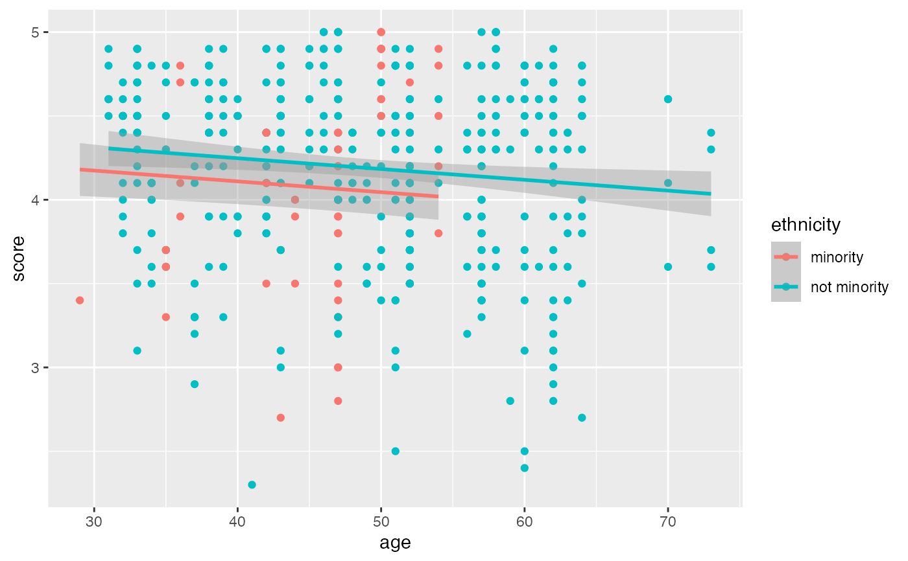
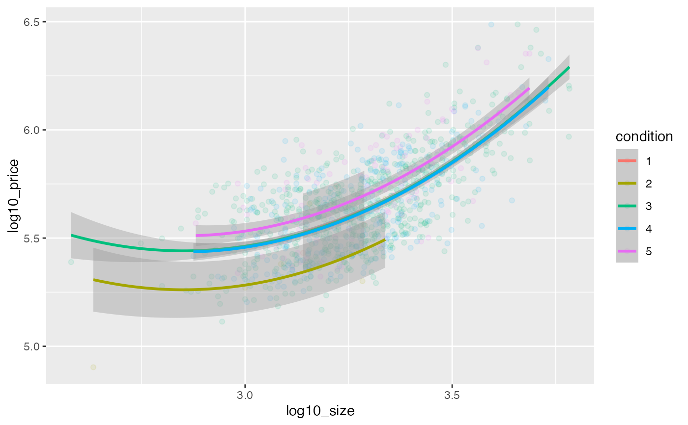

geom_parallel_slopes() fits parallel slopes model and adds its line
output(s) to a ggplot object. Basically, it fits a unified model with
intercepts varying between groups (which should be supplied as standard
ggplot2 grouping aesthetics: group, color, fill,
etc.). This function has the same nature as geom_smooth() from
ggplot2 package, but provides functionality that geom_smooth()
currently doesn't have.
geom_parallel_slopes(mapping = NULL, data = NULL, position = "identity", ..., se = TRUE, formula = y ~ x, n = 100, na.rm = FALSE, show.legend = NA, inherit.aes = TRUE)
Arguments
| mapping | Set of aesthetic mappings created by |
|---|---|
| data | The data to be displayed in this layer. There are three options: If A A |
| position | Position adjustment, either as a string, or the result of a call to a position adjustment function. |
| ... | Other arguments passed on to |
| se | Display confidence interval around model lines? |
| formula | Formula to use per group in parallel slopes model. Basic
linear |
| n | Number of points per group at which to evaluate model. |
| na.rm | If |
| show.legend | logical. Should this layer be included in the legends?
|
| inherit.aes | If |
Examples
library(dplyr) library(ggplot2) example_df <- house_prices %>% slice(1:1000) %>% mutate( log10_price = log10(price), log10_size = log10(sqft_living) ) ggplot_viz <- ggplot( data = example_df, mapping = aes(x = log10_size, y = log10_price, color = condition) ) + geom_point(alpha = 0.1) # Basic usage ggplot_viz + geom_parallel_slopes()ggplot_viz + geom_parallel_slopes(se = FALSE)# Supply custom aesthetics ggplot_viz + geom_parallel_slopes(size = 4)# Different grouping ggplot(example_df, aes(x = log10_size, y = log10_price)) + geom_point(alpha = 0.1) + geom_parallel_slopes(aes(fill = condition))